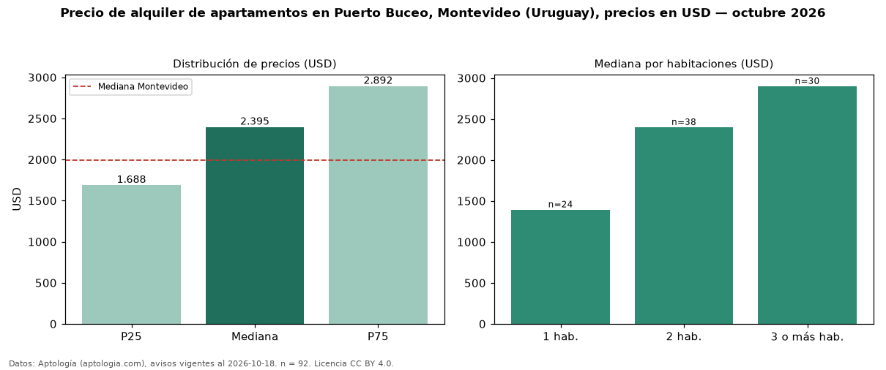

Precio de alquiler de apartamentos en Puerto Buceo, Montevideo (Uruguay), precios en USD — octubre 2026
USD 2.395 al mes es el canon mediano de apartamentos en alquiler en Puerto Buceo, Montevideo (Uruguay) (n = 92 avisos). Frente a la mediana de Montevideo para apartamentos (USD 1.990), queda 20 % por encima. Por metro cuadrado, la mediana es USD 22,00/m² al mes (n = 91 avisos con área), 10 % por encima de Montevideo (USD 20,00/m²). Con el precio por m² de venta del mismo segmento (USD 4.169/m²), la rentabilidad bruta implícita es 6,3 % anual (aproximación con medianas de ofertas distintas). El área mediana anunciada es 97 m². El segmento con más oferta es el de 2 habitaciones (38 avisos, mediana USD 2.400); pasar de 1 habitación a 3 o más habitaciones cambia la mediana +108 %. Por precio mediano es el puesto 2 de 5 barrios de Montevideo con al menos 30 avisos de apartamentos en alquiler (USD): en la franja media. La mitad central de los avisos va de USD 1.688 a USD 2.892 (razón 1,7), una dispersión moderada. Datos: Aptología (aptologia.com), CC BY 4.0 — https://www.aptologia.com/uy/alquiler/montevideo/puerto-buceo. Archivos: PDF, CSV con las cifras y gráfica PNG.

| Avisos únicos | 92 |
|---|---|
| Percentil 25 | COP 1.687 |
| Mediana | COP 2.395 |
| Percentil 75 | COP 2.892 |
| Mediana por m² | COP 22 |
Fuente: avisos vigentes de portales inmobiliarios recopilados por Aptología, deduplicados (mínimo 30 avisos únicos por celda). Precios pedidos, no cerrados. Fecha: 2026-10-18.